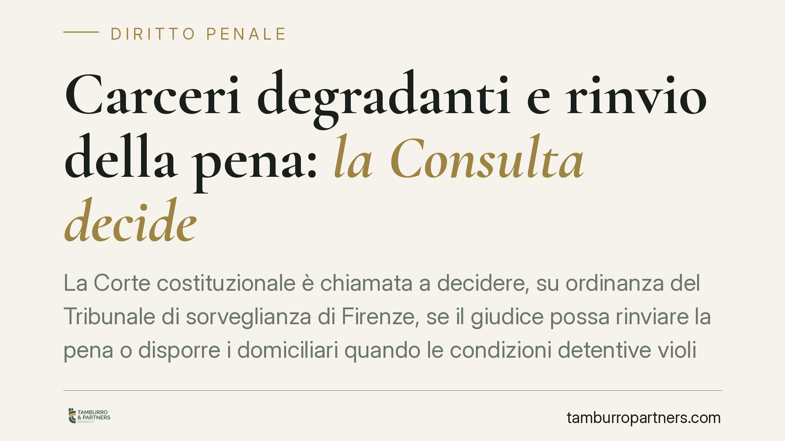

Carceri degradanti e rinvio della pena: la Consulta decide
La Corte costituzionale è chiamata a decidere, su ordinanza del Tribunale di sorveglianza di Firenze, se il giudice possa rinviare la pena o disporre i domiciliari quando le condizioni detentive violino la dignità umana. In gioco c'è un rimedio anticipatorio oggi assente nell'art. 147 cod. pen., a fronte di sovraffollamento e spazi inadeguati.

Il caso e la questione sollevata
Il Tribunale di sorveglianza di Firenze ha investito la Corte costituzionale di una questione che tocca un nodo strutturale del sistema penitenziario. Il punto: quando la detenzione si svolge in condizioni che ledono la dignità della persona, il giudice ha strumenti per differire l'esecuzione della pena o per disporre la detenzione domiciliare?
La vicenda origina dalla posizione di un detenuto nel carcere fiorentino di Sollicciano, struttura da tempo al centro di segnalazioni sulle condizioni di vivibilità. Nel procedimento davanti alla Consulta intervengono, tra gli altri, l'Unione delle Camere penali italiane, l'associazione Antigone e l'Avvocatura dello Stato.
Inquadramento normativo
L'art. 147 cod. pen. disciplina il rinvio facoltativo dell'esecuzione della pena in ipotesi tassative: domanda di grazia, gravi condizioni fisiche, maternità o infanzia del figlio. Non contempla il caso in cui a rendere illegittima l'esecuzione siano le condizioni materiali della detenzione.
È qui il vuoto normativo. L'art. 27, comma 3, Cost. impone che le pene non consistano in trattamenti contrari al senso di umanità. L'art. 3 CEDU vieta in termini assoluti i trattamenti inumani o degradanti. La Corte europea dei diritti dell'uomo, con la sentenza *Torreggiani e altri c. Italia* (8 gennaio 2013), ha condannato l'Italia per sovraffollamento sistemico, individuando nello spazio individuale inferiore a 3 metri quadri una presunzione forte — ma non assoluta — di violazione dell'art. 3. La successiva pronuncia della Grande Camera *Muršić c. Croazia* (2016) ha precisato che quella soglia va apprezzata insieme ad altri fattori (durata, possibilità di movimento, condizioni complessive), potendo essere compensata o aggravata.
Rimedi risarcitori e rimedio anticipatorio
Dopo *Torreggiani*, l'ordinamento ha introdotto l'art. 35-ter dell'ordinamento penitenziario (l. 354/1975), che prevede rimedi a posteriori: riduzione della pena residua o indennizzo in denaro per chi ha subìto detenzione in condizioni degradanti.
Si tratta però di strumenti compensativi. Operano dopo, non impediscono che la lesione prosegua. La questione fiorentina chiede se sia costituzionalmente necessario anche un rimedio anticipatorio: la possibilità per il giudice di sospendere o modulare l'esecuzione finché la condizione lesiva persiste.
Gli scenari decisori
Due le direzioni prevedibili.
La Corte potrebbe pronunciare una sentenza additiva, dichiarando l'illegittimità dell'art. 147 cod. pen. nella parte in cui non prevede il differimento della pena per condizioni detentive lesive della dignità. In tal caso il giudice di sorveglianza disporrebbe di una base normativa diretta.
In alternativa, la Corte potrebbe dichiarare la questione inammissibile, rilevando che la scelta dei rimedi e delle relative condizioni spetta al legislatore per l'ampiezza della discrezionalità coinvolta, accompagnando la decisione con un monito. Sarebbe un rinvio della soluzione al Parlamento, con effetti pratici più incerti nel breve periodo.
Implicazioni pratiche
Per il condannato in esecuzione di pena, l'esito incide sulla possibilità di far valere le condizioni detentive non solo come titolo di indennizzo, ma come motivo per ottenere una sospensione o una misura extramuraria.
Per la difesa, cambia l'oggetto delle istanze alla sorveglianza: da domande orientate al risarcimento a richieste di intervento immediato sull'esecuzione. Anche in attesa della decisione, la documentazione delle condizioni concrete di detenzione resta il fondamento di ogni iniziativa.
Cosa fare in concreto
- Documentare con precisione lo spazio individuale disponibile nella cella, la durata del periodo, le ore fuori dalla stanza e le condizioni igieniche e strutturali.
- Raccogliere gli atti dell'amministrazione penitenziaria e le eventuali segnalazioni del Garante dei detenuti relative alla struttura.
- Valutare la proposizione del reclamo ex art. 35-ter ord. penit. per il periodo già trascorso in condizioni degradanti.
- Monitorare la pubblicazione della decisione della Consulta, che può aprire nuove basi per istanze anticipatorie alla sorveglianza.
- Affiancare all'istanza una ricognizione della posizione complessiva del condannato, incluse le misure alternative astrattamente applicabili al caso.
La pronuncia attesa può ridefinire il confine tra tutela risarcitoria e tutela immediata della dignità in carcere. Vale la pena seguirne gli sviluppi con attenzione.
---
Contributo informativo a cura di Tamburro & Partners Avvocati. Non costituisce parere legale.
Ogni condominio ha una storia a sé.
Se gestisci un'amministrazione e vuoi un confronto su una specifica questione condominiale, scrivi allo studio. Ti rispondiamo entro un giorno lavorativo.